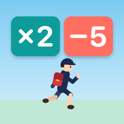

暗算ランナー
計算ゲートを選んで走る、暗算のランナーゲーム（iPhone）
遊び方
走っている小学生の前に、2つのゲート（たとえば「+3」と「×2」）が出てきます。左右に動かして通るゲートを選び、数を大きくしながらゴールをめざします。
- ステージ：1〜100まで。最初は小さい数の足し算・引き算だけで、だんだんかけ算・わり算、大きな数、命がけゲートが出てきます。ゴールの数で ★1〜3
- アウトになるとき：数が0以下になるとアウトです。「命がけゲート」は片方を選ぶとその場でアウトになります。途中で損なゲートを選んでいると、あとの大きな引き算を越えられないこともあります
- 今日のステージ：毎日ひとつ、みんな同じコースを走ります。いくつゲートを越えられたかでランキングに参加できます
- 復活：アウトになったとき、動画広告を見ると1回だけその場から続けられます（見るかどうかは選べます）
よくある質問
途中でやめたい
走っている途中に左上の一時停止ボタンを押すと、つづける・はじめから・タイトルへもどる を選べます。
音を消したい
画面右上の ♪ ボタンで、音のオン・オフを切り替えられます。
次のステージが選べない
ステージはクリアすると次が開きます。★が少ないステージは、ゲートの選び方を変えるともっと大きな数でゴールできます。
記録を消したい・引き継ぎたい
記録はこの iPhone の中に保存しています（ランキングに名前をのせた場合は、ニックネームと記録だけを送ります。ランキングの画面の「ランキングから自分の記録を消す」でいつでも消せます）。アプリを削除すると記録も消えます。ほかの端末への引き継ぎにはまだ対応していません。
お問い合わせ
不具合やご要望は、メールでお知らせください。お使いの iPhone の機種と iOS のバージョンを書いていただけると助かります。